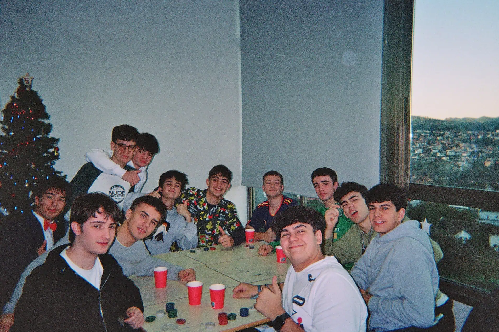
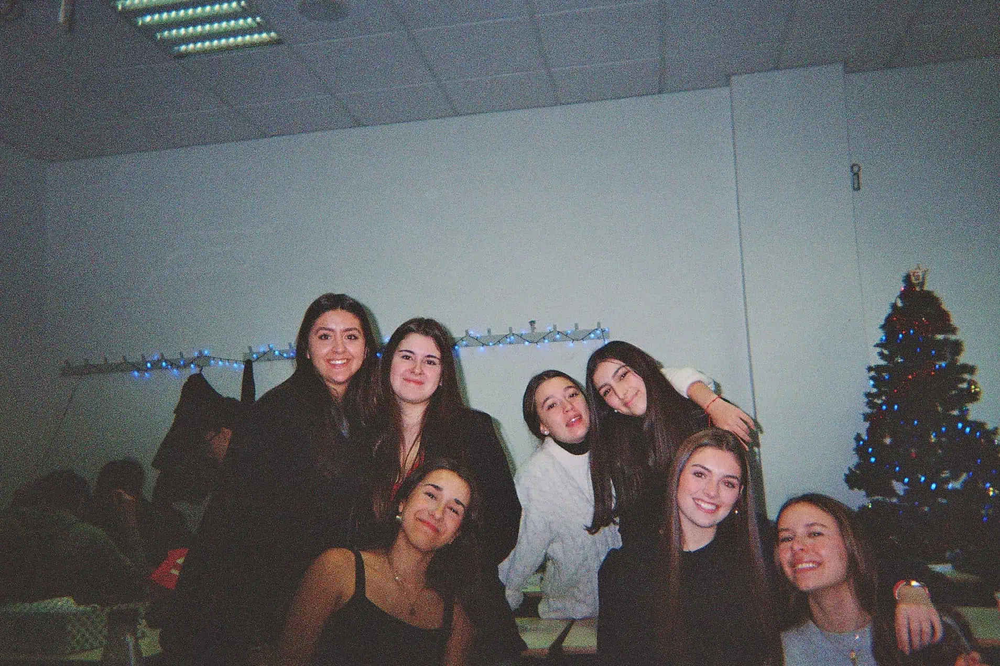
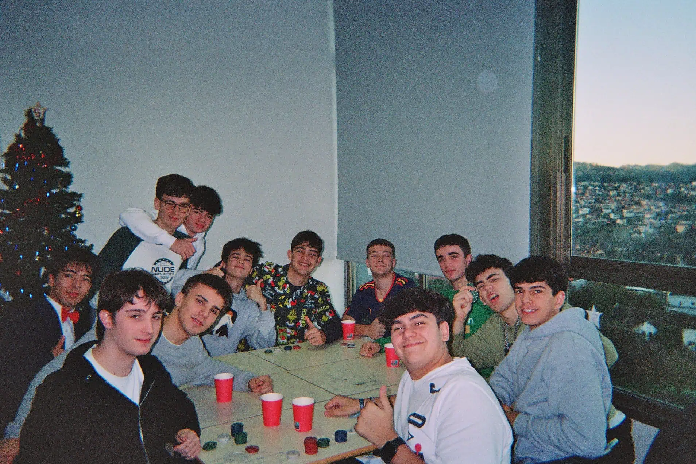
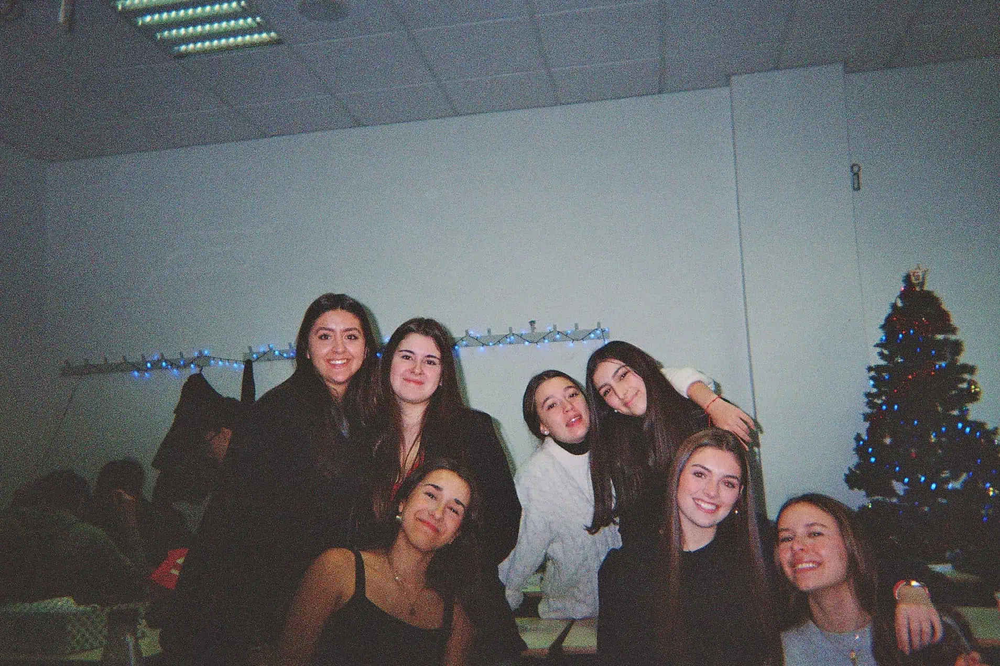

En el Rosalía de Castro, los alumnos de 1º de Bachillerato, todos los años disfrutan de una maravillosa
experiencia como recompensa de todo su esfuerzo durante tantos años. Por ello, a mediados de abril
suelen tener una salida de fin de curso, para la cual deben recaudar fondos durante el curso de 4º de
la ESO y 1º de Bachillerato.
Esta recaudación se lleva a cabo mediante diferentes actividades organizadas por los propios estudiantes,
como rifas, venta de dulces, mercadillos solidarios e incluso torneos deportivos. Gracias al compromiso y
trabajo en equipo, logran reunir el dinero suficiente para costear gran parte del viaje.
En nuestro caso, recaudamos fondos con la venta de rosquillas, flores, comida casera y, sobre todo,
gracias a la fiesta de fin de curso del colegio. En esta celebración, no solo vendimos comida casera,
sino también pulseras, juguetes y maquillaje. Además, nos encargamos de la organización de los bailes
de los distintos cursos de Primaria, lo cual fue una gran responsabilidad pero también una experiencia
muy enriquecedora.
En cuanto al destino de la salida, se decidió mediante votación. Surgieron varias propuestas entre los
compañeros: Roma, Atenas y Barcelona fueron las opciones más populares. Finalmente, tras la votación,
el destino escogido por mayoría fue Atenas.
Venta de flores
En dos ocasiones tuvimos la oportunidad de venderle flores a los más pequeños, por lo que fuimos por sus
clases colgando carteles con la lista de flores, después de un periodo de tiempo volvimos a recoger el dinero
y entregarle las flores a los niños. No solo hizo felices a muchos familiares y niños sino que también
reslutó una gran ayuda económica para pagar el coste del viaje.
Además de que para los alumnos
resultó una actividad muy divertida y con la que perdimos tiempo de clase, lo cual siempre resulta de gran
atractvio para nosotros :).
Venta de comida casera
Todos los años los alumnos de primero de bachiller llevamos al colegio comida casera para ponerla
en venta durante el tiempo del recreo en distintos puestos de comida. Por lo que por la mañana,
algunos alumnos nos dedicamos a cortar y preparar tooooooda la comida (que no era poca he de decir),
tratando de combatir las ganas de comer o probar un cachito.
Cuando llegó la hora de la venta,
los puestos se abarrotaron de niños tratando de comprar la comida con mejor pinta, al final de la
mañana cuando ya no quedaba más comida habíamos conseguido recaudar un dinero que nos ayudaría mucho
para la salida.
Venta de rosquillas
Para poder recaudar más dinero cada uno de nosotros nos dedicamos a vender rosquillas en nuestro
tiempo libre, algunos iban de casa en casa timbrando y otros las vendían a conocidos de sus padres,
profesores o amigos.
Torneo de fútbol
El encargado de organizar el torneo de fútbol fue Quique, uno de los alumnos de 1º de Bachillerato,
quien se encargó de colgar las listas para poder apuntarse, cobrar las entradas por jugador y
organizar los partidos de todo el torneo. Para ello se ayudó de un aula de Classroom donde todos los
jugadores se registraron para poder saber el orden de los partidos. El equipo ganador tendrá la
oportunidad de jugar un partido contra los profesores.
Fiesta del colegio
La fiesta del colegio fue un evento muy especial que se organizó con mucha dedicación y entusiasmo
por parte de toda la comunidad educativa. La preparación comenzó con varias semanas de anticipación,
en las que cada grupo de alumnos se encargó de preparar el baile representativo de cada clase de
primaria. Cada coreografía fue ensayada con esfuerzo y alegría, para que el día del evento todo
saliera perfecto y los estudiantes pudieran mostrar su talento y creatividad.
Además de los bailes, se organizaron distintos puestos para hacer la jornada aún más divertida.
Se instaló un bar con comidas y bebidas, atendido por familias y docentes, donde los asistentes
pudieron disfrutar de un buen momento compartido. También hubo un puesto de maquillaje para niños,
donde los más pequeños podían transformarse en sus personajes favoritos. No faltaron los juegos, que
ofrecieron momentos de entretenimiento para chicos y grandes, ni el puesto de fotos, ideal para
guardar un lindo recuerdo de la jornada.
La fiesta fue un verdadero éxito gracias al trabajo en equipo, la participación de todos y el
entusiasmo que se vivió desde los preparativos hasta el final del evento.
Fiesta de navidad
Antes de que llegaran las vacaciones y nos lanzáramos de cabeza a comer
turrón y ver pelis en pijama, en primero de bachillerato montamos la Navidad más épica del cole.
Nos convertimos en unos auténticos emprendedores navideños. Jeff Bezos, temblá.
Primero, nos
pusimos manos a la obra con las rifas para unas pedazo de cestas navideñas. Sí, sí, esas que
llevan desde turrón hasta espárragos deluxe. Íbamos por los pasillos como si fuéramos comerciales
profesionales: "¿Una rifa por la ilusión navideña?" ¡Y la gente compraba, eh! Nos faltaba el
maletín y el abrigo largo para parecer vendedores vintage.
Pero eso no fue todo. También
organizamos algo que fue un éxito total: ¡los cupones de churros en el recreo! Porque seamos
realistas, ¿quién puede resistirse a unos churros calentitos en pleno diciembre? Exacto: nadie.
La gente se peleaba (con amor) por conseguir su cupón y llegar primero a la fila.
Y para coronar
(literalmente) nuestras actividades, un grupo de valientes compañeros se disfrazó de Reyes Magos y
se pasearon por el cole recogiendo las cartas de los niños pequeños. Fue todo muy tierno, mágico y
un poco cómico (algunos se tomaron MUY en serio su papel... ejem, Melchor con gafas de sol).
Los peques estaban encantados, y nosotros felices de repartir ilusión.
En resumen:
trabajamos, nos divertimos, comimos churros y repartimos magia. ¡Navidad en 1º de Bach fue un
éxito rotundo!


.webp)

.webp)
 




.webp)
.webp)
.webp)
.webp)
.webp)